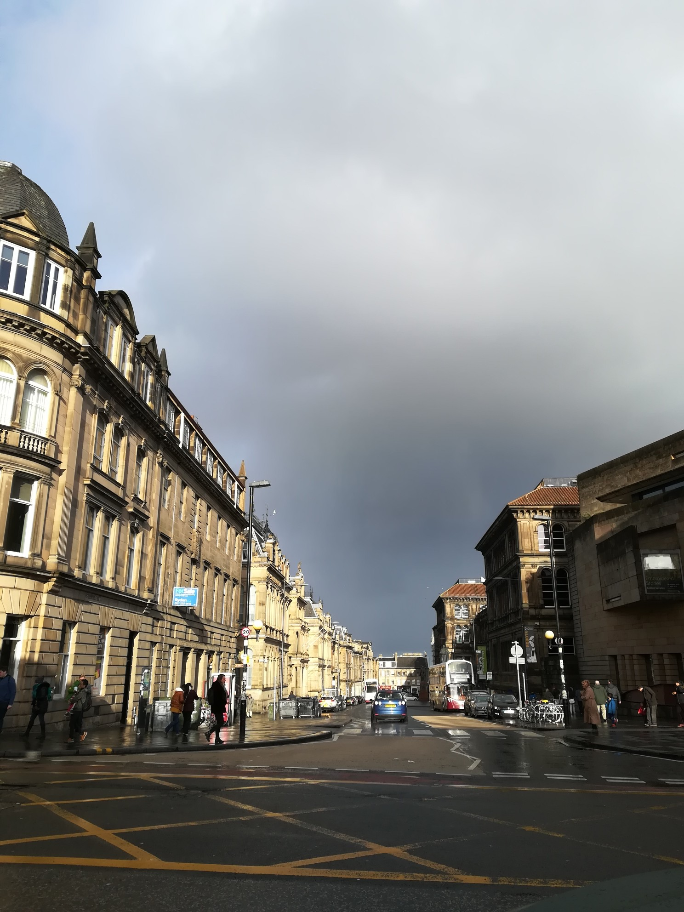
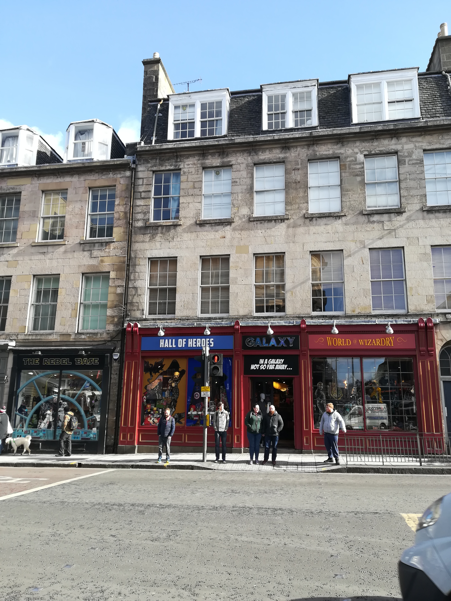
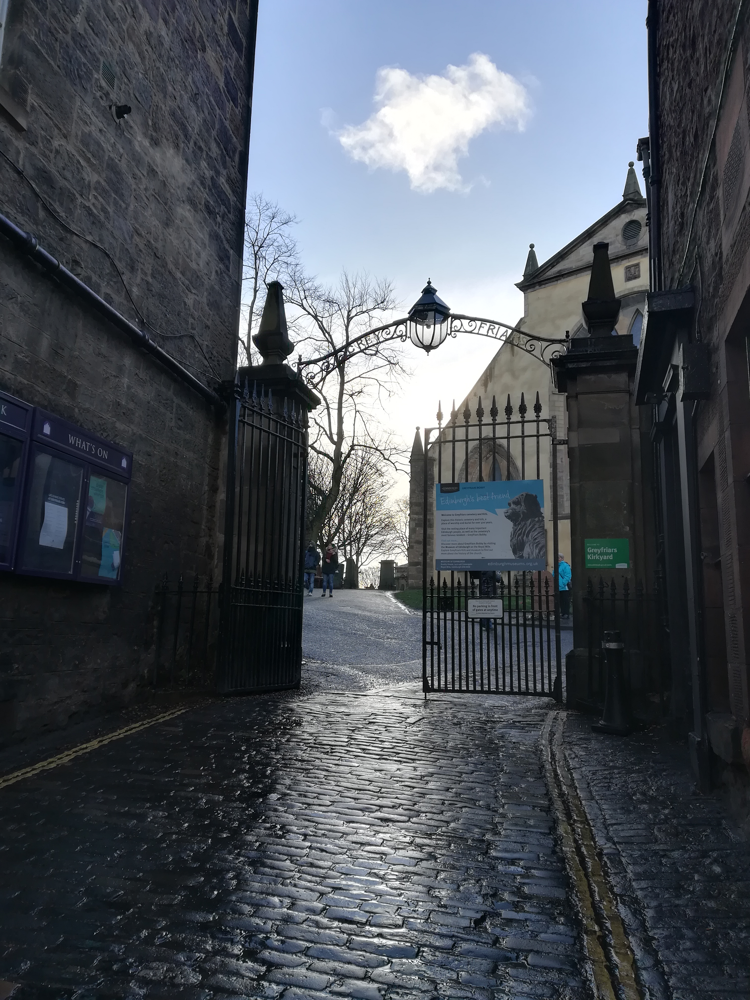
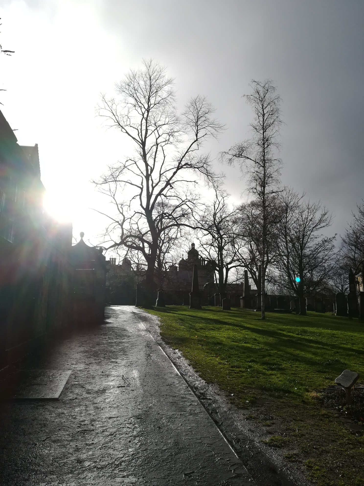
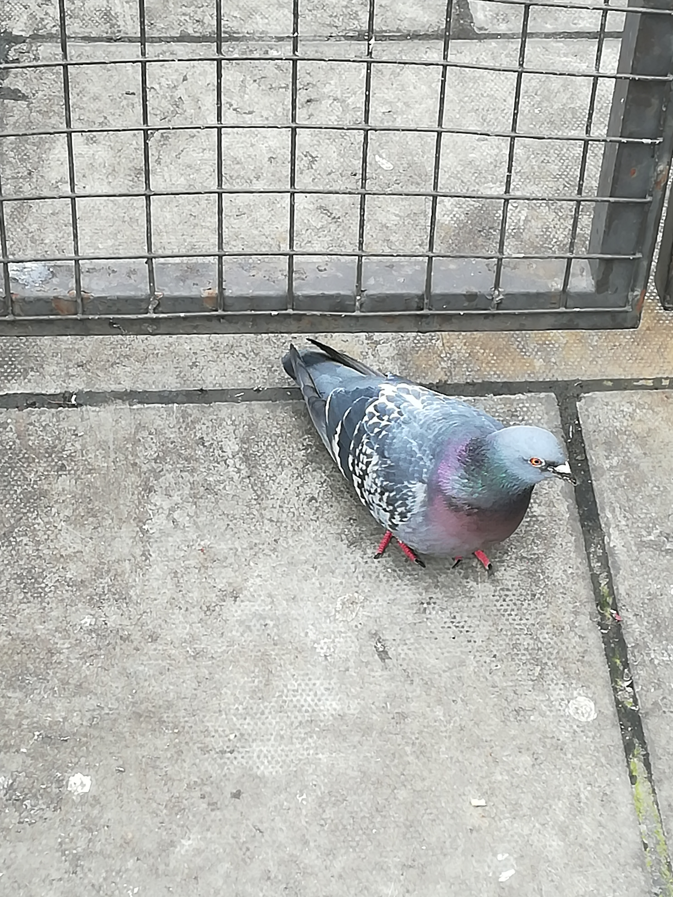
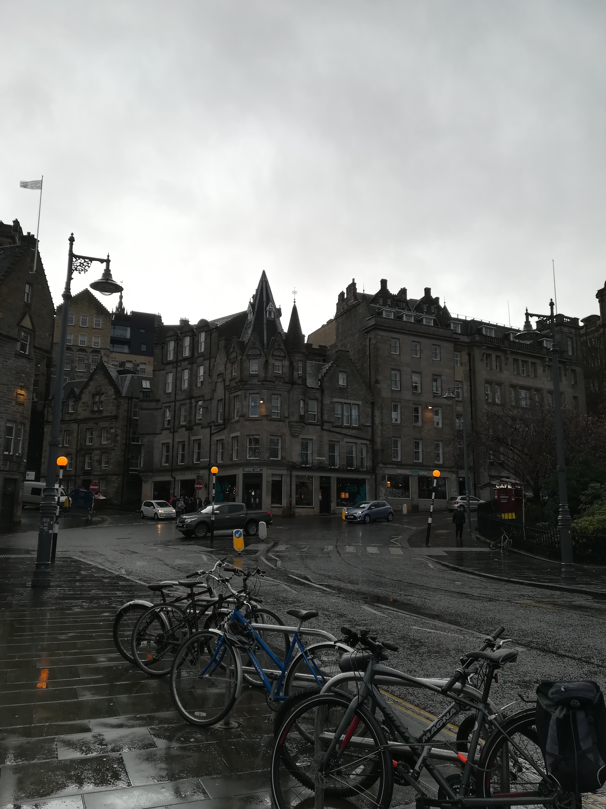
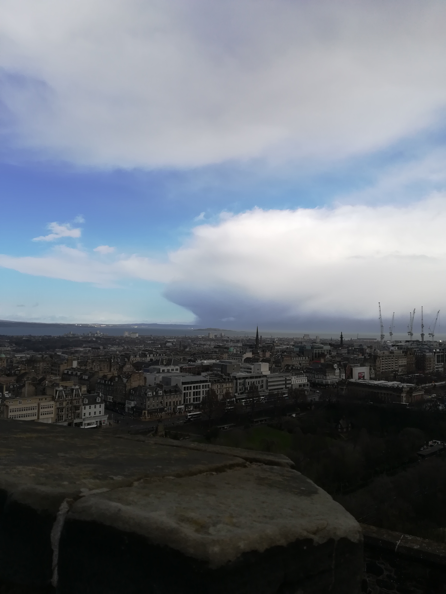
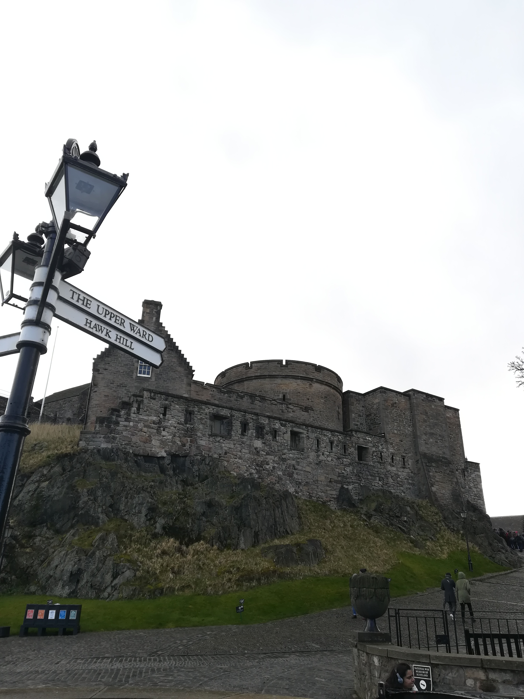
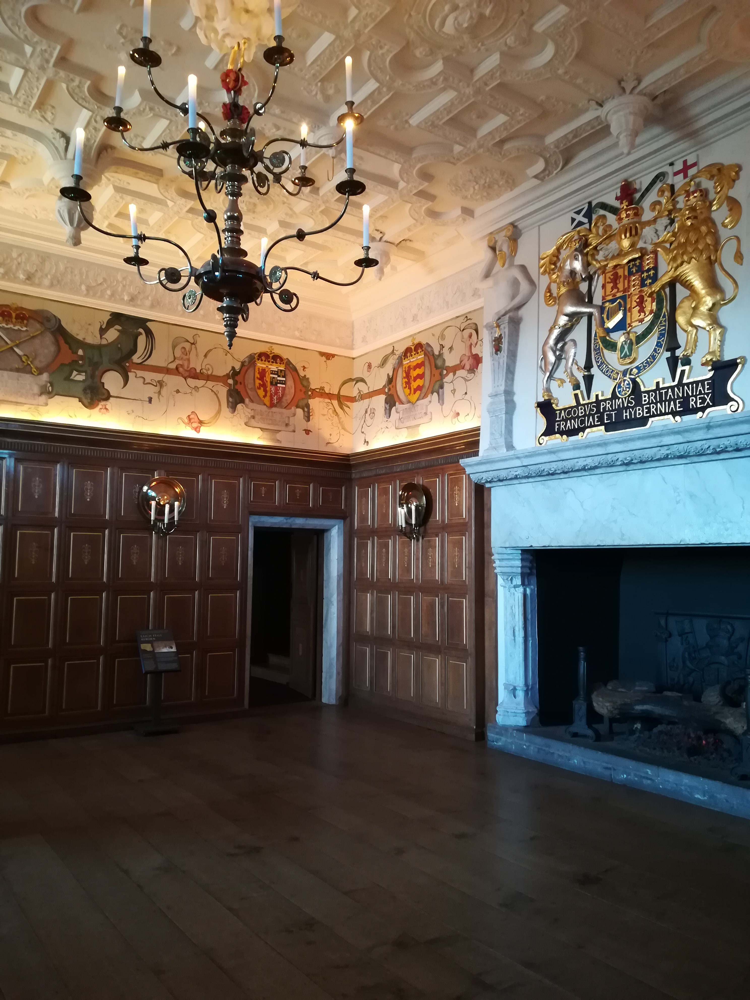
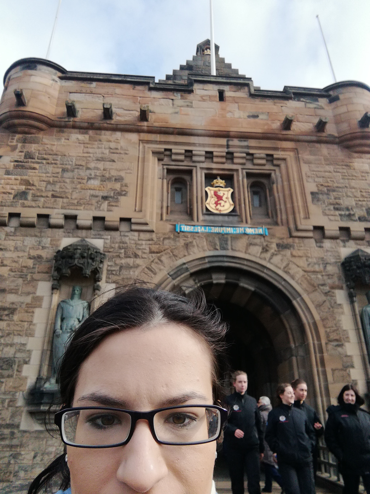

In March 2019, I visited Edinburgh, Scotland. It was amazing! But rainy, and cold.
I took the train from Derby, England all the way to Edinburgh, Scotland. It took over 4 hours, but was worth the trip! The scenery was really nice, but I couldn't wait to get off of the train and walk around.

This was the view from one of the main roads
All of the buildings are really beautiful, but Scotland has a dark history!

This was a Harry Potter themed shop I checked out
It was rainy out, but one of the first things I wanted to do was check out Greyfriar's Kirkyard, supposably one of the most haunted cemeteries in the world!

Entrance to Greyfriar's Kirkyard

View from inside the Kirkyard, it was around dusk at this time.
I also went to see the Edinburgh Vaults, however it was took dark to take any photos as it was underground.

Local pigeon I found causing trouble outside a cafe.
The next day I went to visit Edinburgh Castle, it was a long walk uphill.

One of the streets I had to walk up to get to the castle.

This was the view from the castle grounds.
I walked around for awhile outside the grounds and checked out the gift shop before heading inside the castle. Also bought a cute coffee cup!

This is view from the parameter of the grounds

This was a photo from the interior of the castle.
Edinburgh Castle is where Mary Queen of Scots lived temporarily.

A selfie I took, too close up though. I can't remember where I took this photo though.